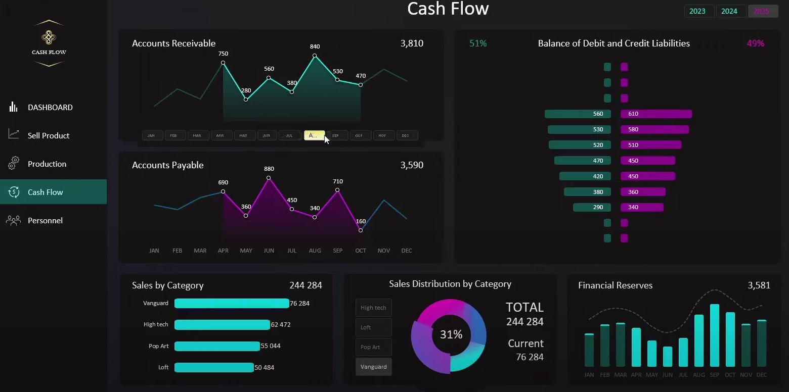
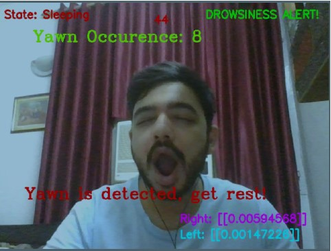
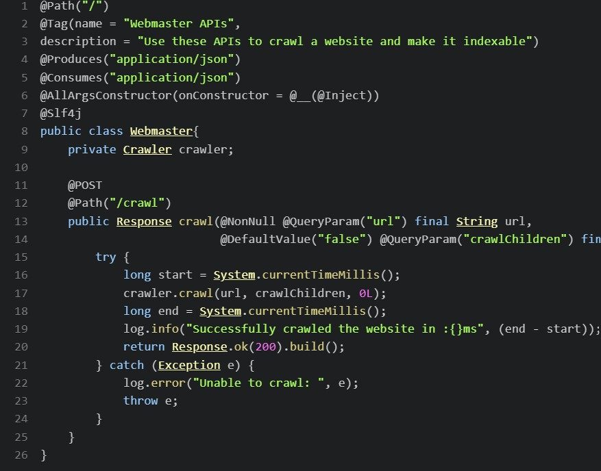

About-me

A seasoned data analyst with over two years of hands-on experience, I bring a proven track record of transforming raw data into actionable insights. Proficient in data manipulation, statistical analysis, and visualization, I have successfully contributed to informed decision-making processes. My expertise spans diverse industries, showcasing adaptability and a strong analytical mindset. With a keen eye for detail and a commitment to delivering accurate and meaningful reports, I excel in uncovering trends and patterns that drive business growth. Ready to leverage my skills in a dynamic environment, I am poised to make impactful contributions to any data-driven organization.By the way, check out my awesome work.
• Strong Knowledge of SDLC Software Development Life Cycles mainly agile, and waterfall methodologies
• Proficient in preparing different documents like the User Requirement List (URL/URD), Wireframes to illustrate the functionalities, Test Case Scenarios and Test Plan documents, Requirement Traceability Matrices (RTM), Use cases, Issue logs, and other additional documents
• Working Knowledge of Business Requirements Elicitation, Process Modelling Cost/benefit analysis, Risk analysis, and development of functional specifications
• Well-versed in conducting and presenting in Meetings, JAD Sessions, Requirement Gathering Sessions, Participatory Design, Interviews, Requirement Workshops, Presentations, Bridge calls, and Conference calls with onsite and offshore team members
Techstack

• Languages: Python, SQL, R, HTML, CSS, JavaScript
• Packages: NumPy, Pandas, Keras, TensorFlow, Scikit, Regex, NLTK
• Visualization Tools: MS Excel (Pivot tables, VBA, Macros), Power BI, Tableau, MS Project, MS SharePoint
• Machine Learning: Naive Bayes, XG Boost, NLP, RNN, Transformer Models, OpenCV
• Documentation: FRD, BRD, SRS, Use Case Document, User stories, UML, RTM
• Professional Skills: Agile Scrum methodologies, Documentation, Test Driven Development, Microservices Architecture, UML Diagrams, RESTful APIs, CMS-Based Applications
Work-EX

Treasury Board Secretariat - Research Analyst (Co-op)
• Upgraded database from Database XS to MYSQL by creating table joins for public administration customers which decreased time and improved fault tolerance
• Documented technical and non-technical requirements by evaluating projects and projecting project documentation as well as resolved and updated tickets
• Complied and presented quarterly dashboards on Power BI to show KPI scorecards and key metrics
• Performed data handling activities using Excel (VLOOKUP, Pivot table, Mathematical Formulas) and have basic understanding of EVM Project Management tool
• Achieved 90% success in automation for creating an AI Model and lowered manual summarization work by operating on the seq2seq transformer model which will track new concise government announcements in the dashboard
• Designed reports using relevant applications such as Excel and Tableau for a variety of company operations to continuously assess goals and performance
Ideal Experential Learning - Data Analyst
• Performed Data Scrapping, Data Wrangling, and Data Profiling to get accurate data from multiple sources and improve the quality of large datasets for execution, using various automated tools that enhanced output accuracy
• Conducted timely meetings and gave presentations on amended modules as well as giving insights on simplistic measures of performance providing explanations to stakeholders and implementing timely updates
• Examined business intelligence metrics from the company's website data on sales using a supervised, unsupervised Machine learning algorithm and changed the accuracy from 93% to 98.3%
• Documented necessary protocol, tests, diagrams, and pseudo-codes
• Capsuled training material to train clients, which resulted in reducing operational costs by 3%
• Predicted Customer churn rate using decision tree algorithm which helped win customers back by 5% as well reviewed reason for customer turnback
• Tailored a supervised learning approach to determine categories of incoming calls more accurately than the existing system in place. Also addressed unassigned calls which accounted for up to 50% of total call volume and classified them
Contact
• Name : Vatsal Patel
• Email Address: Email Me
• Contact info: 437-988-3318
• Linkedin :
LinkedIn Profile
• Address: 710 Humberwood blvd ,Etobicoke M9W 7J5
Projects
Dashboard For revenue Using excel

Created live revenue dashboard using vaious python libraries. Further sorted data by fetching sql queries, used various excel formulas (VBA , Pivot tables and DAX queries) and created interactive board using Power BI
Drivers Drowsiness Detection

Made Driver drowsiness detection prototype using Haar Cascade Classifier, DLib Library, Facial Landmarks, and CNN with Python libraries. The tested prototype revealed limitations, and future plans focus on improving commercial viability. The dynamic system proposes continuous monitoring of driver drowsiness, adjusting vehicle speed, and triggering assistance features. Expanding capabilities to high-end real-time models, incorporating night vision, hydraulic brakes, and image enhancement algorithms, enhances overall vehicle safety. The system, beyond drowsiness detection, offers diverse applications like anti-distraction measures in online education and assessing employee attention span, showcasing its potential in various real-world scenarios.
Search Engine

Used Java to develop a threaded search engine that tracked user searches, allows users to crawl web pages, and search an inverted index built from crawled web pages.
Processes all text files in a directory and its subdirectories, cleans and parses the text into word stems, and builds an in-memory inverted index to store the mapping from word stems to the documents and position within those documents where those word stems were found.
Supports exact search and partial search. In addition, application can track the total number of words found in each text file, parse and stem a query file, generate a sorted list of search results from the inverted index, and supports writing those results to a JSON file.
Supports thread-safe inverted index, and uses a work queue to build and search the inverted index using multiple threads.
Supports web crawling and acquiring html
Supports User Tracking and stores user history